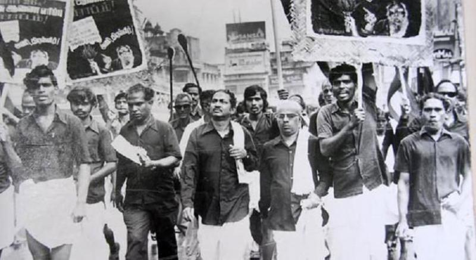
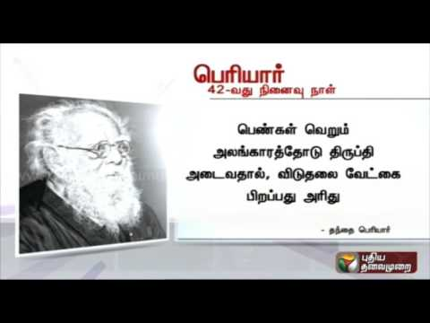

Who is Periyar?
E V Ramaswamy, known as Periyar, is Tamil Nadu’s famous social reformer. His father was a rich businessman in Erode, Tamil Nadu. He grew up in a pious Vaishnavite family, listening to Hindu scriptures from his childhood. At the young age of 25, he went on a pilgrimage to Kasi to visit the temple of Lord Kasi Viswanath
History of Periyar
Erode Venkata Ramasamy was born on 17 September 1879 to a Kannada Balija merchant family in Erode, then a part of the Coimbatore district of the Madras Presidency. Ramasamy's father was Venkatappa Nayakar (or Venkata), and his mother was Chinnathyee, Muthammal. He had one elder brother named Krishnaswamy and two sisters named Kannamma and Ponnuthoy. He later came to be known as "Periyar" meaning 'respected one' or 'elder' in the Tamil.
Ramasamy married when he was 19, and had a daughter who lived for only 5 months. His first wife, Nagammai, died in 1933. Ramasamy married for a second time in July 1948. His second wife, Maniammai, continued Ramasamy's social work after his death in 1973, and his ideas then were advocated by Dravidar Kazhagam.
In 1929, Ramasamy announced the deletion of his caste title Naicker from his name at the First Provincial Self-Respect Conference of Chengalpattu. He could speak two Dravidian languages: Kannada and Tamil. Ramasamy attended school for five years after which he joined his father's trade at the age of 12. He used to listen to Tamil Vaishnavite gurus who gave discourses in his house enjoying his father's hospitality. At a young age, he began questioning the apparent contradictions in the Hindu mythological stories. As Ramasamy grew, he felt that people used religion only as a mask to deceive innocent people and therefore took it as one of his duties in life to warn people against superstitions and priests.
Kashi Pilgrimage Incident
In 1904, Ramasamy went on a pilgrimage to Kashi to visit the revered Shiva temple of Kashi Vishwanath. Though regarded as one of the holiest sites of Hinduism, he witnessed immoral activities such as begging, and floating dead bodies.[16] His frustrations extended to functional Hinduism in general when he experienced what he called Brahmanic exploitation.
However, one particular incident in Kasi had a profound impact on Ramasamy's ideology and future work. At the worship site there were free meals offered to guests. To Ramasamy's shock, he was refused meals at choultries, which exclusively fed Brahmins. Due to extreme hunger, Ramasamy felt compelled to enter one of the eateries disguised as a Brahmin with a sacred thread on his bare chest, but was betrayed by his moustache. The gatekeeper at the temple concluded that Ramasamy was not a Brahmin, as Brahmins were not permitted by the Hindu shastras to have moustaches. He not only prevented Ramasamy's entry but also pushed him rudely into the street.
As his hunger became intolerable, Ramasamy was forced to feed on leftovers from the streets. Around this time, he realised that the eatery which had refused him entry was built by a wealthy non-Brahmin from South India. This discriminatory attitude dealt a blow to Ramasamy's regard for Hinduism, for the events he had witnessed at Kasi were completely different from the picture of Kasi he had in mind, as a holy place which welcomed all.[16] Ramasamy was a theist until his visit to Kasi, after which his views changed and he became an atheist
Self Respect Movement
Ramasamy and his followers campaigned constantly to influence and pressure the government to take measures to remove social inequality (abolish untouchability, manual scavenging system etc.), even while other nationalist forerunners focused on the struggle for political independence. The Self-Respect Movement was described from the beginning as "dedicated to the goal of giving non-Brahmins a sense of pride based on their Dravidian past"
In 1952, the Ramasamy Self-Respect Movement Institution was registered with a list of objectives of the institution from which may be quoted as
for the diffusion of useful knowledge of political education; to allow people to live a life of freedom from slavery to anything against reason and self respect; to do away with needless customs, meaningless ceremonies, and blind superstitious beliefs in society; to put an end to the present social system in which caste, religion, community and traditional occupations based on the accident of birth, have chained the mass of the people and created "superior" and "inferior" classes... and to give people equal rights; to completely eradicate untouchability and to establish a united society based on brother/sisterhood; to give equal rights to women; to prevent child marriages and marriages based on law favourable to one sect, to conduct and encourage love marriages, widow marriages, inter caste and inter-religious marriages and to have the marriages registered under the Civil Law; and to establish and maintain homes for orphans and widows and to run educational institutions.
Opposition to Hindi
In 1937, when Chakravarthi Rajagopalachari became the Chief Minister of Madras Presidency, he introduced Hindi as a compulsory language of study in schools, thereby igniting a series of anti-Hindi agitations.[10] Tamil nationalists, the Justice Party under Sir A. T. Panneerselvam, and Ramasamy organised anti-Hindi protests in 1938 which ended with numerous arrests by the Rajaji government.
During the same year, the slogan "Tamil Nadu for Tamilians" was first used by Ramasamy in protest against the introduction of Hindi in schools. He claimed that the introduction of Hindi was a dangerous mechanism used by the Aryans to infiltrate Dravidian culture.[43] He reasoned that the adoption of Hindi would make Tamils subordinate to the Hindi-speaking North Indians. Ramasamy claimed that Hindi would not only halt the progress of Tamil people, but would also completely destroy their culture and nullify the progressive ideas that had been successfully inculcated through Tamil in the recent decades.
Cutting across party lines, South Indian politicians rallied together in their opposition to Hindi.[44] There were recurrent anti-Hindi agitations in 1948, 1952 and 1965.[45]
As President of the Justice Party (1938–1944)
A political party known as the South Indian Libertarian Federation (commonly referred to as Justice Party) was founded in 1916, principally to oppose the economic and political power of the Brahmin groups. The party's goal \ was to render social justice to the non-Brahmin groups. To gain the support of the masses, non-Brahmin politicians began propagating an ideology of equality among non-Brahmin castes. Brahmanical priesthood and Sanskritic social class-value hierarchy were blamed for the existence of inequalities among non-Brahmin caste groups.
In 1937, when the government required that Hindi be taught in the school system, Ramasamy organised opposition to this policy through the Justice Party. After 1937, the Dravidian movement derived considerable support from the student community. In later years, opposition to Hindi played a big role in the politics of Tamil Nadu. The fear of the Hindi language had its origin in the conflict between Brahmins and non-Brahmins. To the Tamils, acceptance of Hindi in the school system was a form of bondage. When the Justice Party weakened in the absence of mass support, Ramasamy took over the leadership of the party after being jailed for opposing Hindi in 1939.[46] Under his tutelage the party prospered, but the party's conservative members, most of whom were rich and educated, withdrew from active participation.[9]
Women's Rights
As a rationalist and ardent social reformer, Ramasamy advocated forcefully throughout his life that women should be given their legitimate position in society as the equals of men and that they should be given good education and have the right to property. He thought age and social customs was not a bar in marrying women. He was keen that women should realise their rights and be worthy citizens of their country.
Ramasamy fought against the orthodox traditions of marriage as suppression of women in Tamil Nadu and throughout the Indian sub-continent. Though arranged marriages were meant to enable a couple to live together throughout life, it was manipulated to enslave women.[57] Much worse was the practice of child marriages practised throughout India at the time. It was believed that it would be a sin to marry after puberty. Another practice, which is prevalent today, is the dowry system where the bride's family is supposed to give the husband a huge payment for the bride. The purpose of this was to assist the newly wedded couple financially, but in many instances dowries were misused by bridegrooms. The outcome of this abuse turned to the exploitation of the bride's parents wealth, and in certain circumstances, lead to dowry deaths.[59] There have been hundreds of thousands of cases where wives have been murdered, mutilated, and burned alive because the father of the bride was unable to make the dowry payment to the husband. Ramasamy fiercely stood up against this abuse meted out against women.
Women in India also did not have rights to their families' or husbands' property. Ramasamy fought fiercely for this and also advocated for women to have the right to separate or divorce their husbands under reasonable circumstances. While birth control remained taboo in society of Ramasamy's time, he advocated for it not only for the health of women and population control, but for the liberation of women.
He criticised the hypocrisy of chastity for women and argued that it should either apply also to men, or not at all for both genders.[62] While fighting against this, Ramasamy advocated getting rid of the Devadasi system. In his view it was an example of a list of degradations of women, attaching them to temples for the entertainment of others, and as temple prostitutes. Further, for the liberation of women, Ramasamy pushed for their right to have an education and to join the armed services and the police force.
According to biographer M.D. Gopalakrishnan, Ramasamy and his movement achieved a better status for women in Tamil society. Ramasamy held that, in matters of education and employment, there should be no difference between men and women. Gopalakrishnan states that Ramasamy's influence in the State departments and even the Center made it possible for women to join police departments and the army. Ramasamy also spoke out against child marriage.[52